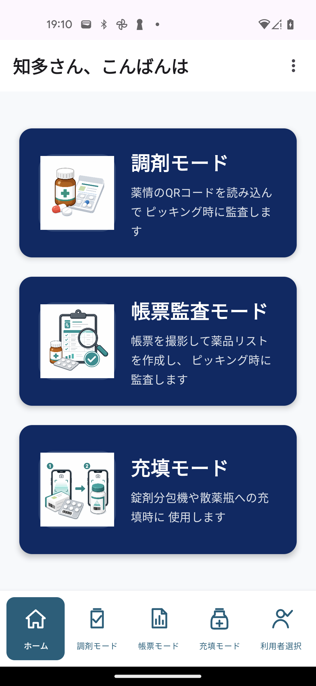
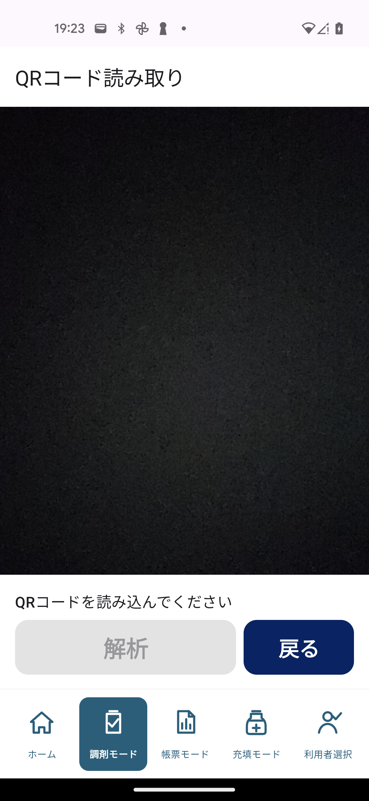
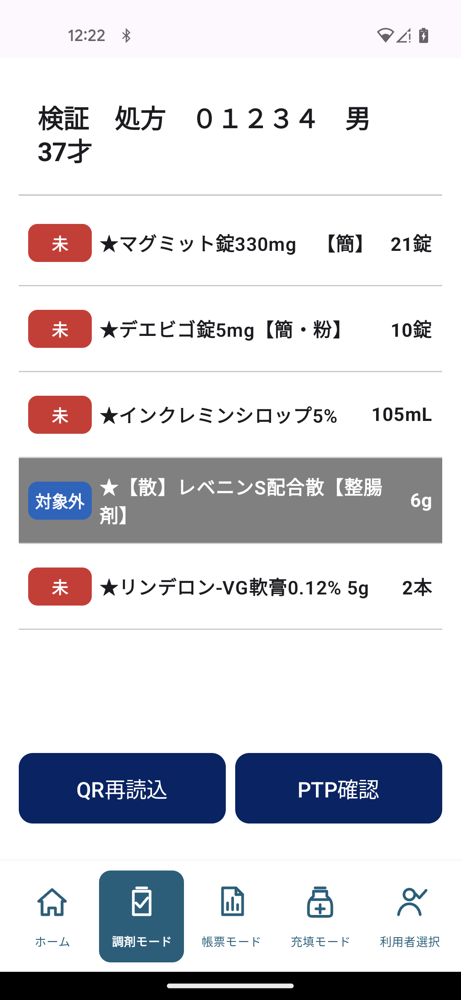
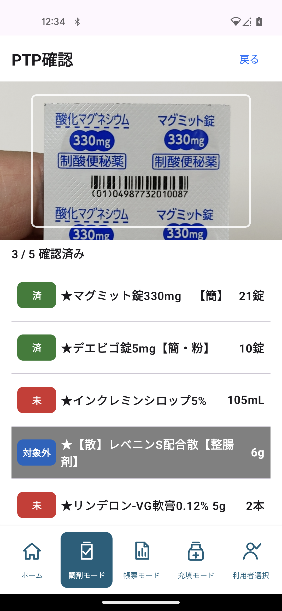
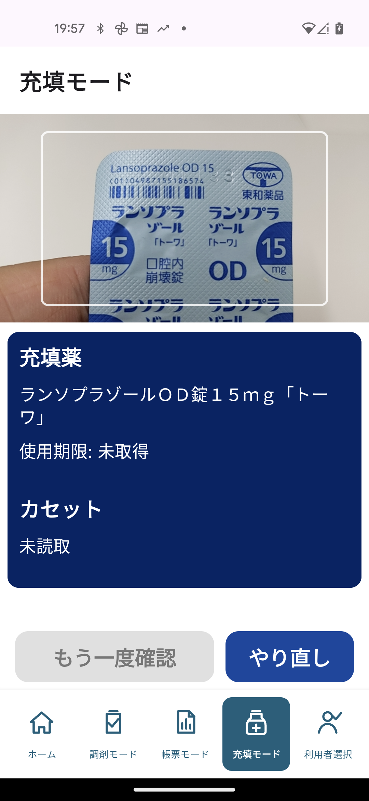

1. ヤクピタでできること
ヤクピタは、薬局内で発生する「読み取り」「照合」「確認」を、スマホカメラで補助するためのアプリです。
薬剤情報提供書のQRコードを読み込み、ピッキング時の確認に使います。
帳票を撮影し、薬品リストを作ってからPTPや箱のコードと照合します。
錠剤分包機や散薬瓶への充填時に、薬品と充填先を照合します。
2. ホーム画面
アプリを開くと、ホーム画面に主要な3つのモードが表示されます。使いたい作業のカードをタップします。
- 調剤モード薬剤情報提供書のQRコードから調剤確認を始めます。
- 帳票監査モード帳票を撮影して監査を始めます。
- 充填モード薬品と充填先の照合を始めます。
- 下部タブホーム、調剤、帳票、充填、利用者選択へ移動できます。
- 右上メニュー薬品検索、院内製剤・材料マスター、施設・利用者登録などを開きます。

3. 利用者登録と利用者選択
充填モードなどで作業者を記録するため、最初に利用者を登録し、作業する人を選択します。
- ホーム画面右上のメニューを開き、「利用者登録」をタップします。
- 姓、名、ふりがなを入力して「登録する」をタップします。
- 登録済み利用者の一覧に名前が表示されたことを確認します。
- 下部タブの「利用者選択」をタップし、利用者一覧から作業する人を選びます。
- ホームまたは使用するモードへ戻ります。
初回起動時の施設登録
本アプリでは、薬品名やバーコードの確認に「MEDIS標準マスター」という医薬品データを使用します。このデータは医療機関であれば無償で利用できるため、医療機関での利用確認として初回起動時に施設情報を登録します。
- 初回起動時に施設登録画面が表示されます。
- 施設名、郵便番号、都道府県、市区町村を入力します。
- 「登録する」をタップします。
- 登録完了後、MEDISデータのダウンロードが始まります。
- ダウンロードが完了すると、各モードで薬品マスターを利用できます。
登録後に施設情報を確認・変更する場合は、ホーム画面右上のメニューから「施設登録」を開き、内容を修正して「登録する」をタップします。
MEDISマスターを更新する
本アプリは、薬品名やバーコード情報に使用するMEDISマスターの最新版を7日間隔で自動確認し、必要なデータを更新します。
- 通常はホーム画面を使用しているときに自動で更新を確認するため、操作は不要です。
- すぐに更新したい場合は、ホーム画面右上のメニューを開きます。
- 「MEDISマスター取込」をタップすると、7日を待たずに最新版の確認と更新を開始します。
- 更新中は通信を切らず、処理が終わるまで待ちます。
4. 調剤モードの使い方
調剤モードは、薬剤情報提供書のQRコードを読み取り、ピッキング時の確認に使います。
- ホーム画面で「調剤モード」をタップします。
- 薬剤情報提供書のQRコードをスマホカメラに入れます。
- QRコードがすべて読み取れたら「解析」をタップします。
- 患者情報と処方薬の一覧が表示されたことを確認します。
QRコードが分割されている場合は、画面の案内に従って続けて読み取ります。

QRコード読取後の操作
処方内容を確認したら「PTP確認」をタップし、薬品のピッキングと照合を始めます。
- 画面上部の患者情報が薬剤情報提供書と一致しているか確認します。
- 薬品名と処方量を確認します。未確認の薬品には赤い「未」が表示されます。
- 一包化や散剤など、ピッキング確認を行わない薬品は、その薬品の行をタップして「対象外」に変更します。
- 「対象外」にした薬品はアプリに記憶され、次回以降の処方では最初から「対象外」として表示されます。
- 処方内容を確認したら「PTP確認」をタップして、次の画面へ進みます。

PTP確認画面でピッキングする
ピッキングした薬品のPTPシートまたは箱にあるGS1コードを、画面上部の白い枠内に映して照合します。
- 薬品を1品ずつピッキングし、PTPシートまたは箱のGS1コードをカメラに映します。
- 処方と一致すると音が鳴り、その薬品が緑色の「済」に変わります。
- 別の薬品や未登録のコードを読み取ると警告音・振動とメッセージで知らせます。薬品名を確認して読み直してください。
- 「確認済み」の数字で進み具合を確認します。「対象外」の薬品も確認済み件数に含まれます。
- 赤い「未」が残っている間は、残りの薬品を続けて読み取ります。
- 対象となる薬品がすべて「済」になると、確認結果の画面へ自動的に進みます。
- 最後に一覧を確認し、「完了」をタップするとホーム画面へ戻ります。

5. 帳票監査モードの使い方
帳票監査モードは、取り揃え表などを撮影し、OCRで薬品名を読み取って監査リストを作ります。
- ホーム画面で「帳票監査モード」をタップします。
- 帳票全体が画面に入るように置きます。
- 「撮影」をタップします。
- OCR処理が終わるまで待ちます。
- 検出された薬品リストを確認します。
- 候補が複数ある場合は、正しい薬品を選択します。
- 「PTPスキャン」へ進み、PTPや箱のコードを読み取って照合します。
6. 院内製剤・材料を登録する
MEDISの薬品マスターにない院内製剤や医療材料も、利用者登録マスターへ追加すると帳票監査でピッキングできます。
- ホーム画面右上のメニューを開きます。
- 「院内製剤・材料マスター」をタップします。
- 帳票に記載される名称を入力します。
- ピッキング時に読み取るGTINまたは施設独自バーコードを入力します。
- 必要に応じて規格・包装と区分を入力します。
- 「マスターに登録」をタップします。
7. 充填モードの使い方
充填モードは、薬品と充填先のカセット・瓶が合っているかを確認するための2段階読み取りです。
- 下部タブまたはホーム画面から「充填モード」を開きます。
- 利用者未選択の場合は、先に利用者を選択します。
- 充填する薬品のPTPまたは箱をスマホカメラで読み取ります。
- 画面に薬品名と使用期限が表示されます。
- 次に、充填先のカセットまたは瓶のコードを読み取ります。
- 一致すれば「充填OK」と表示され、音と振動で知らせます。

充填ログを確認する
充填が完了すると作業内容が記録され、あとから充填した薬品や担当者を確認できます。
- ホーム画面右上のメニューを開きます。
- 「充填ログ確認」をタップします。
- 「今日」「7日」「30日」「全期間」から、確認したい期間を選びます。
- 一覧で薬品名、充填日時、担当者、充填元のコード、充填先の確認コード、使用期限と照合結果を確認します。
- 確認が終わったら、画面左上の戻るボタンでホーム画面へ戻ります。
プライバシーポリシーを確認する
本アプリが取り扱う情報、保存場所、外部サービスへの通信、データの削除方法などをアプリ内で確認できます。
- ホーム画面右上のメニューを開きます。
- 「プライバシーポリシー」をタップします。
- 画面をスクロールして内容を確認します。
- 確認が終わったら、画面左上の戻るボタンでホーム画面へ戻ります。
- 端末内での処理処方QRの患者情報やカメラ画像は照合のため端末内で処理します。
- 端末への保存施設・利用者情報、充填・監査履歴、医薬品マスターなどをアプリ専用領域へ保存します。
- 外部通信郵便番号検索、医薬品マスター更新、ML Kitなどで必要な通信について説明しています。
- データの削除Androidの設定からストレージを消去する方法や、アンインストールによる削除について説明しています。
8. 困ったとき
- カメラが映らないカメラ権限が許可されているか確認してください。
- 読み取れないコード全体を明るい場所で画面中央に入れ、少し離してピントを合わせてください。
- 利用者登録が必要下部タブの「利用者選択」から利用者を選んでください。
- 帳票が読めない帳票全体が入るように撮影し、影や折れ目を避けてください。
- 薬品が出ない薬品マスタやデータ更新が済んでいるか確認してください。
- 院内製剤・材料が出ない右上メニューの「院内製剤・材料マスター」へ名称とバーコードを登録してください。